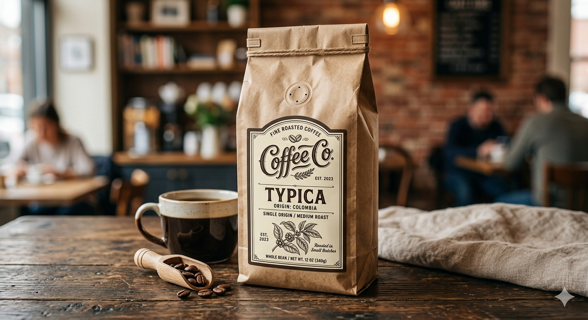

Typica Coffee
$12.99 per lb
Typica is one of the oldest and most important Arabica coffee varieties. It produces a clean, bright cup with excellent sweetness and balanced acidity. Great body with notes of chocolate, caramel, and citrus.
- Origin
- Central America & East Africa
- Roast Level
- Medium to Dark
- Flavor Notes
- Chocolate, Caramel, Citrus, Nutty
- Processing
- Washed
- Available In
- Whole Bean • Ground • 5 lb bags • 10 lb cases
- Minimum Order
- 10 lbs
Perfect for: Cafés, restaurants, offices, and retail stores looking for a reliable, classic single-origin coffee.
Request Pricing and Samples